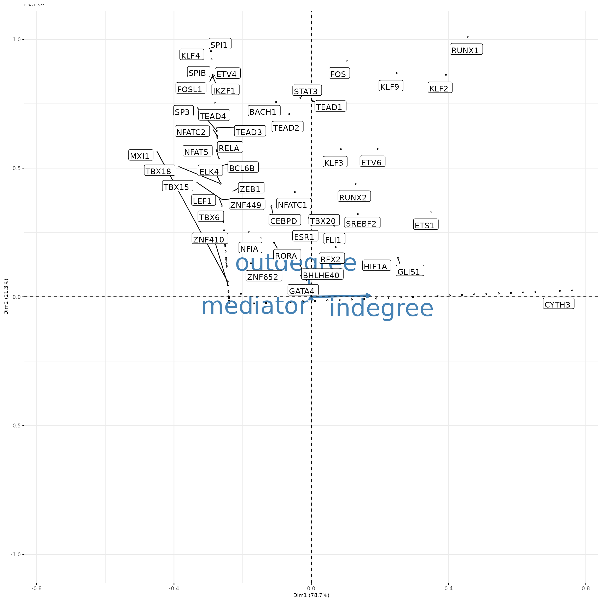
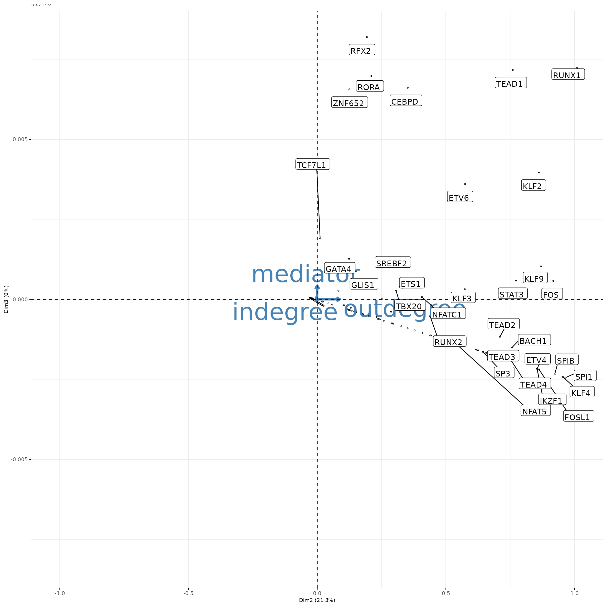
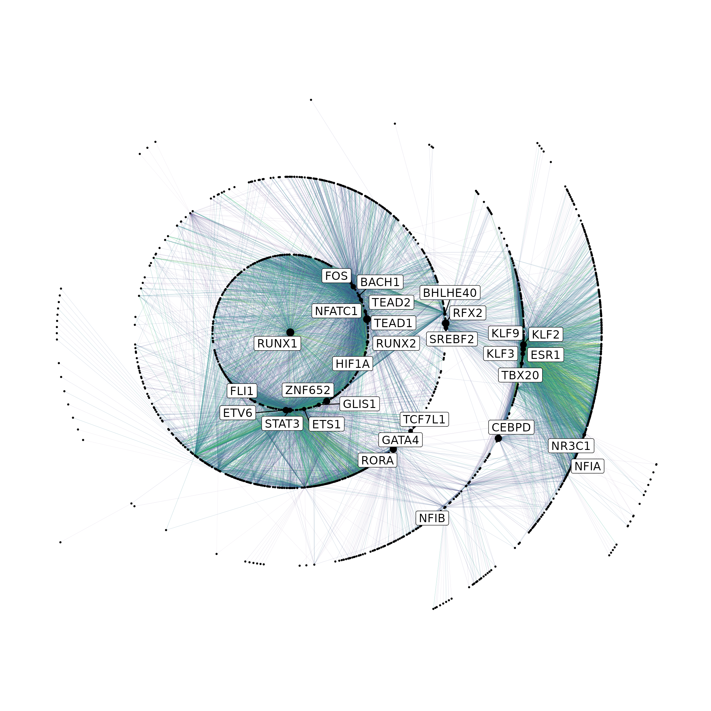

myofibroblast-network.RmdIn this tutorial, we will explore network analysis methods to explore the gene regulatory networks generated by scMEGA in fibroblasts during myocardial infarction.
This will allow us to
Next, we load all necessary packages:
suppressMessages(library(ArchR))
suppressMessages(library(Seurat))
suppressMessages(library(Signac))
suppressMessages(library(scMEGA))
suppressMessages(library(harmony))
suppressMessages(library(Nebulosa))
suppressMessages(library(BSgenome.Hsapiens.UCSC.hg38))
suppressMessages(library(JASPAR2020))
suppressMessages(library(TFBSTools))
suppressMessages(library(ggplot2))
suppressMessages(library(dplyr))
suppressMessages(library(igraph))
suppressMessages(library(ggraph))We first load the network produced by scMEGA:
dfgrn <- readRDS("./Fibroblast/final_grn.Rds")
netobj <- graph_from_data_frame(dfgrn,directed = TRUE)
V(netobj)$type <- ifelse(V(netobj)$name %in% dfgrn$tf,"TF/Gene","Gene")Next, we will estimate distint network topological measures as node degree, node centrality and node page rank score and plot these in a principal component based embedding with a focus on transcription factors. We plot bellow the 3 first PCs.
p <- TopEmbGRN(df.grn=netobj)## Warning: ggrepel: 1783 unlabeled data points (too many overlaps). Consider
## increasing max.overlaps
## Warning: ggrepel: 1800 unlabeled data points (too many overlaps). Consider
## increasing max.overlaps
This reveals that RUNX1 is a central TF in this network, as it has high in/out-degree values and high mediator score.
To further inspect genes and TFs associated with RUNX1, we create a centric layout embedding.
NetCentPlot(netobj,"RUNX1")
This network reveals direct targets of RUNX1 such as TEAD4 and HIF1A and indirect targets as TEAD1 and TEAD2. If you want, you can explore a highlight parameter to personalize the plot by only showing the desired genes/TFs. By default, the TFs with a betweenness score higher than an average is depicted in the plot.